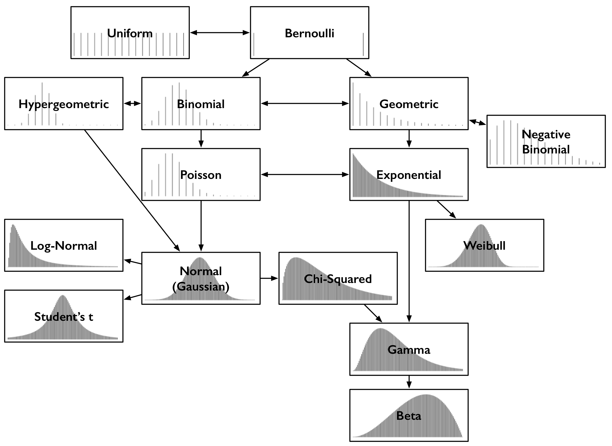

Probabilistic Attack Vector Analysis Building Blocks
- Introduction
- Types of Distribution
- Monte Carlo Simulations
- Methodology
- References
- Appendices
- Contributors
Introduction
This report discusses building blocks to aid in answering questions regarding the Tari Network. In order to perform analysis and draw accurate conclusions, a set of skills and programs needs to be built and honed. Among these, is an understanding of statistics. The report focuses on types of distribution and the deriving of their formulae, and discusses the simulations, specifically the Monte Carlo Simulation.
Types of Distribution
There are a few high-level types of distribution, including continuous, discrete, mixed continuous/discrete, joint and non-numeric distribution.
When determining the probability of an attacker controlling the majority of nodes in the network, the various types of probability distribution of the specific circumstances and variables of the problem need to be analyzed. There are two categories of probability distribution: finite and infinite support [1]. All probability distributions can be classified either as discrete or continuous probability distribution, depending on whether they define probabilities associated with discrete or continuous variables [14].
Continuous Distribution
If a variable can take on any value between two specified values, it is called a continuous variable, and its probability distribution is called a discrete probability distribution [14].
Probabilities of continuous random variables (X) are defined as the area under the curve of their Probability Density Functiondef (PDF). Therefore only ranges of values can have a nonzero probability. The probability that a continuous random variable equals some value is always zero [11]. The following plot shows a typical continuous distribution below (although specifically for a normal distribution).

A discrete variable, as opposed to a continuous variable, can only take on a finite number of values. If a random variable is a discrete variable, its probability distribution is called a discrete probability distribution [14]. A discrete distribution thus describes the probability of occurrence of each value of a discrete random variable [11].
With a discrete probability distribution, each possible value of the discrete random variable can be associated with a nonzero probability. Thus, the presentation of a discrete probability distribution is often in tabular form [11], or a bar graph.


Examples of discrete distribution with **finite** support [def][discrete_distribution_finite~] include the following:| Type of Finite Discrete Distribution | Description [1] |
|---|---|
| Bernoulli Distribution | Takes value $1$ with probability $p$ and value $0$ with probability $q=1-p$. |
| Rademacher Distribution | Takes value $1$ with probability $\frac{1}{2}$ and value $-1$ with probability $\frac{1}{2}$. |
| Binomial Distribution | The number of successes in a series of independent Yes/No experiments, all with the same probability of success. |
| Beta-Binomial Distribution | The number of successes in a series of independent Yes/No experiments with heterogeneity in the success probability. |
| Degenerate Distribution | At $X0$, where $X$ is certain to take the value $X0$. This does not look random, but it satisfies the definition of a random variable. This is useful because it puts deterministic variables and random variables in the same formalism. |
| Discrete Uniform Distribution | Where all elements of a finite set are equally likely. This is the theoretical distribution model for a balanced coin, an unbiased die, a casino roulette, or the first card of a well-shuffled deck. |
| Hypergeometric Distribution | The number of successes in the first $m$ of a series of $n$ consecutive Yes/No experiments, if the total number of successes is known. This distribution arises where there is no replacement. |
| Poisson Binomial Distribution | The number of successes in a series of independent Yes/No experiments with different success probabilities. |
Examples of discrete distribution with infinite support def include the following:
| Type of Infinite Discrete Distribution | Description [1] |
|---|---|
| Boltzmann Distribution | A discrete distribution important in statistical physics, which describes the probabilities of the various discrete energy levels of a system in thermal equilibrium. It has a continuous analog. |
| Geometric Distribution | A discrete distribution that describes the number of attempts needed to get the first success in a series of independent Bernoulli trials or, alternatively, only the number of losses before the first success (i.e. one less). |
| Negative Binomial/Pascal Distribution | A generalization of the geometric distribution of the $nth$ success. |
| Poisson Distribution | A very large number of individually unlikely events that happen at a specific time interval. Related to this distribution are several other distributions: the displaced Poisson, the hyper-Poisson, the general Poisson binomial and the Poisson-type distributions. |
| Skellam Distribution | The distribution of the difference between two independent Poisson-distributed random variables. |
| Zeta Distribution | Has uses in applied statistics and statistical mechanics, and perhaps may be of interest to number theorists. It is the Zipf distribution for an infinite number of elements. |
| Zipf's Law | A discrete power-law distribution, the most famous example of which is the description of the frequency of words in the English language. |
| Zipf-Mandelbrot Law | A discrete power-law distribution, which is a generalization of the Zipf distribution. |
Hypergeometric Distribution
A hypergeometric distribution is a discrete probability distribution that describes the probability of $T$ successes (random draws for which the object drawn has a specified feature) in $n$ draws, without replacement, from a finite population of size $N$ that contains exactly $m$ objects with that feature, wherein each draw is either a success or a failure [3]:
- A sample of size $n$ is randomly selected without replacement from a population of $N$ items.
- In the population, $T$ items can be classified as successes and $N-T$ items can be classified as failures.
- There are $m$ featuring objects.
Given $m, N, n$ and $T$, the hypergeometric probability can be computed based on the following example:
Example 1: Suppose a population consists of $N$ items, $T$ of which are successes; and a random sample drawn from that population consists of $n$ items. Then the hypergeometric probability is [10]: $$ h(m; N, n, T)= {{T}\choose{m}}{{N-T}\choose{n-m}}{{N}\choose{n}} $$ The hypergeometric distribution has the following properties:
- The mean of the distribution is equal to $n\cdot\frac{T}{N}$
- The variance is $ n\cdot T \cdot(N-T)\cdot\frac{N-n}{N^2\cdot(N-1)}$
Binomial Distribution
The binomial distribution with parameters $n$ and $p$ is the discrete probability distribution of the number of successes in a sequence of $n$ independent experiments, each asking a Yes/No question, and each with its own Boolean-valued outcome: success/yes/true/one (with probability $p$) or failure/no/false/zero (with probability $q=1- p$). A single success/failure experiment is also called a Bernoulli trial or Bernoulli experiment, and a sequence of outcomes is called a Bernoulli process. For a single trial, i.e. $n=1$, the binomial distribution is a Bernoulli distribution. The binomial distribution is the basis for the popular binomial test of statistical significance.
The binomial distribution is frequently used to model the number of successes in a sample of size $n$ drawn with replacement from a population of size $N$. If the sampling is carried out without replacement, the draws are not independent, and so the resulting distribution is hypergeometric, not binomial. However, for $n$ much larger than $n$, the binomial distribution remains a good approximation and is widely used.
Thus, in a binomial distribution, an object is selected with replacement [4]. A binomial experiment requires that the probability of success be constant on every trial.
Example 2: You have an urn containing $10$ marbles: $5$ red and $5$ green. You randomly select $2$ marbles with replacement, and the probability of success would not change. It would be $\frac{5}{10}$ on every trial [10].
Monte Carlo Simulations
The Monte Carlo approach is a computer-based analytical method that was developed in the 1940s as part of the atomic program, by a scientist at the Los Alamos National Laboratory, who used it to model the random diffusion of neutrons. It was named after the city in Monaco, which has many casinos.
Monte Carlo analysis uses statistical tools to model a real-life system or process mathematically. It then estimates the probability of obtaining a successful outcome. The statistical distribution of the process to be modeled must be determined before the Monte Carlo simulation can be applied.
Monte Carlo methods are widely used, heuristic techniques that can solve a variety of common problems, including optimization and numerical integration problems. These algorithms work by cleverly sampling from distributions to simulate the workings of a system. Applications range from solving problems in theoretical physics to predicting trends in financial investments [6].
Monte Carlo Fallacy
The Monte Carlo Fallacy or gambler's fallacy is the inaccurate belief that if something happens more frequently than normal during a given period, it will happen less often in the future. In situations where the outcome being observed is truly random and consists of independent trials of a random process, this belief is false. The fallacy can arise in many situations, but is most strongly associated with gambling, where it is common among players [13].
The gambler's fallacy can be illustrated by considering the repeated toss of a fair coin. The outcomes in different tosses are statistically independent, and the probability of getting heads on a single toss is $\frac{1}{2}$. The probability of getting $2$ heads in $2$ tosses is $\frac{1}{4}$, and the probability of getting $3$ heads in $3$ tosses is $\frac{1}{8}$. If, after tossing four heads in a row, the next coin toss also came up heads, it would complete a run of five successive heads. Since the probability of a sequence of five consecutive heads is $\frac{1}{32}$, a person might believe that the next flip would more likely come up tails rather than heads again. This is incorrect and is an example of the gambler's fallacy. The events "five heads in a row" and "first $4$ heads, then a tails" are equally likely, each having a probability of $\frac{1}{32}$. Since the first four tosses turn up heads, the probability that the next toss is a head is $\frac{1}{2}$ . While a run of five heads has a probability of $\frac{1}{32} = 0.03125$, the misunderstanding lies in not realizing that this is the case only before the first coin is tossed. After the first four tosses, the results are no longer unknown, so the probability at that point is equal to $one$. The reasoning that it is more likely that a fifth toss is more likely to be tails because the previous four tosses were heads, with a run of luck in the past influencing the odds in the future, forms the basis of the fallacy [13].
Crude Monte Carlo
The Monte Carlo technique is built upon this principle: instead of evaluating an indefinite integral, which can sometimes be impossible, the average of the integrand is estimated, and that is used to approximate the integral. If one needs to be more precise, the number of samples can be increased.
It is a widely used heuristic technique that can solve a variety of common problems, including optimization and numerical
integration problems. These algorithms work by cleverly sampling from a distribution to simulate the workings of a system.
Applications range from solving problems in theoretical physics to predicting trends in financial investments.
Law of Large Numbers
The Law of Large Numbers (LLN), in probability and statistics, states that as a sample size grows, its mean gets closer to the average of the whole population. In statistical analysis, the LLN can be applied to a variety of subjects. It may not be feasible to poll every individual within a given population to collect the required amount of data. However, every additional data point gathered has the potential to increase the likelihood that the outcome is an accurate measure of the mean [7].
The LLN is crucial because it guarantees stable, long-term results for the averages of some random event [8].

Methodology
Notation Used
This section gives the general notation of statistical expressions when specifically referenced. This information is important knowledge for the remainder of the report.
- Let $N$ be the total number of nodes in the network.
- Let $n$ be the committee size.
- Let $m$ be the number of bad actors.
- Let $T$ be the Byzantine Fault Tolerance (BFT) threshold.
There is a pool with N nodes. The pool contains m malicious nodes or bad actors. From within the pool, a random selection of nodes, n is drawn. From this selection, the probability of drawing a threshold of bad actors, T, needs to be calculated.
Crude Monte Carlo Simulation
Programming the Simulation
It was initially thought that selecting a committee ($n$) from the total nodes ($N$) without replacing the selected nodes requires the removal of an element from the pool of total nodes when it is drawn. However, as the program is calling for many selections within many experiments, this logic could not be used.
The experiment is extended to ask the overarching question: "What is the probability of selecting the threshold worth of bad nodes or more from a pool of total nodes?" To this end, we perform a variable number of experiments and count how many times the threshold is met, in order to estimate the probability.
Use of Random Numbers
Some problems in science and technology are described by "exact" mathematics, leading to "precise" results, e.g. throwing a ball and oscillating a system. Some problems appear physically uncertain, e.g. rolling a die and molecular motion. Random numbers can be used to mimic the uncertainty of the experiment.
Random numbers make it possible to simulate physical systems with uncertainty, in input data or the process.
Computing Statistics
The mode, median and mean are the arithmetic average of a data set. This is found by adding the numbers in a data set and dividing by how many numbers there are.
Mode Value
The mode is the score or value that occurs most often in a data set.
Median Value
The median is the middle number in a data set with the numbers listed in either ascending or descending order.
If the total number of numbers (n) is an odd number, then the formula is: $$ median =\biggl(\frac{n+1}{2}\biggr)^{th}term $$ If the total number of numbers (n) is an even number, then the formula is: $$ median= \frac{\biggl({\frac{n}{2}\biggr)^{th}term+\biggl({\frac{n}{2}+1\biggr)}^{th}term}}{2} $$
Mean Value
$$
\bar{x} = \frac{{\sum}x}{N}
$$
Where:
- $\sum$ represents the summation
- $x$ represents scores
- $N$ represents number of scores

A single probability from the overarching question was used as a means to derive the formulae, as shown in the following example.
Example 3: What is the probability of selecting a majority of bad nodes from a total of $5$ nodes if the committee size is $3$? There are $3$ bad nodes $(B1, B2, B3)$ and $2$ good nodes $(G1, G2)$.
The first step is to calculate the number of combinations where bad and good nodes can be chosen:
| Draw 1st node | Draw 2nd node | Draw 3rd node | Are bad nodes in the majority? |
|---|---|---|---|
$B1$ | $B2$ | $B3$ | Yes |
$B1$ | $B2$ | $G1$ | Yes |
$B1$ | $B2$ | $G2$ | Yes |
$B1$ | $B3$ | $G1$ | Yes |
$B1$ | $B3$ | $G2$ | Yes |
$B1$ | $G1$ | $G2$ | No |
$B2$ | $B3$ | $G1$ | Yes |
$B2$ | $B3$ | $G2$ | Yes |
$B2$ | $G1$ | $G2$ | No |
$B3$ | $G1$ | $G2$ | No |
| Tally of Yes responses | $7$ |
From this list, the number of combinations where $B$ is the majority can then be tallied. In this case, there are $7$ combinations where $B$ is the majority. Thus, from the $10$ combinations, there are $7$ combinations where there is a majority of bad nodes. Therefore, the quotient of $7$ and $10$ is the probability $0.7$.
This method is limited in calculating the probability where the variables are large. For example, if the same question was posed, but one had to calculate the probability of selecting a majority of bad nodes from a total of $100$ nodes, with a committee size of $60$, $60$ bad nodes and $40$ good nodes, the number of combinations where bad and good nodes can be chosen is $1.27E+28$.
Binomial Distribution Formula
With regard to binomial distribution, a committee of nodes is drawn from the total nodes with replacement, i.e. nodes are drawn, the intention of the node is distinguished and the node is returned to the total nodes. $$ P = {{n}\choose{T}}\cdot\biggl(\frac{m}{n}\biggr)^{T}\cdot\biggl(\frac{N-m}{n}\biggr)^{n-T} $$
Hypergeometric Distribution Formula
With regard to hypergeometric distribution, a committee of nodes is drawn from the total nodes without replacement, i.e. nodes are drawn simultaneously, the intention of the node is distinguished and not returned to the total nodes. This closely mimics the events that would take place within the network. $$ P = \frac{{{m}\choose{T}}\cdot{{N-m}\choose{n-T}}}{{N}\choose{n}} $$
Summation Formula
Referring to Example 3, the tally is the sum of all the combinations where the bad nodes are in a majority.
As a recap to the question, what is the probability of selecting a majority of bad nodes from a total of $100$ nodes if the committee size is $10$? This problem considers solving for the probability where there is a majority of bad nodes in the committee. This entails calculating the probabilities from the BFT threshold to the committee size. Thus, there needs to be a summation of individual probabilities in order to calculate the probability of selecting the majority of bad nodes. $$ P_{tot} = \sum_{i=T}^{n} P(N,m,n,i) $$
The following table provides some visual insight into understanding this:
| Committee Size | BFT Threshold | No. of Steps |
|---|---|---|
| 10 | 7 | 3 |
References
[1] Wikipedia, “List of Probability Distributions” [online]. Available: https://en.wikipedia.org/wiki/List_of_probability_distributions. Date accessed: 2019‑05‑13.
[2] Wikipedia, “Support (Mathematics)" [online]. Available: https://en.wikipedia.org/wiki/Support_(mathematics). Date accessed: 2019‑05‑13.
[3] Wikipedia, “Hypergeometric Distribution” [online]. Available: https://en.wikipedia.org/wiki/Hypergeometric_distribution. Date accessed: 2019‑05‑13.
[4] Wikipedia, “Binomial Distribution" [online]. Available: https://en.wikipedia.org/wiki/Binomial_distribution. Date accessed: 2019‑05‑13.
[5] POA Network Team, "POA Network: Honey Badger BFT and Threshold Cryptography" [online]. Available: https://medium.com/poa-network/poa-network-honey-badger-bft-and-threshold-cryptography-c43e10fadd87. Date accessed: 2019‑06‑28.
[6] P. Hanbury, "Monte Carlo Simulations with Python (Part 1)" [online]. Available: https://towardsdatascience.com/monte-carlo-simulations-with-python-part-1-f5627b7d60b0. Date accessed: 2019‑06‑28.
[7] W. Kenton, "Law of Large Numbers" [online]. Available: https://www.investopedia.com/terms/l/lawoflargenumbers.asp. Date accessed: 2019‑06‑28.
[8] Wikipedia, "Law of Large Numbers" [online]. Available: https://en.wikipedia.org/wiki/Law_of_large_numbers. Date accessed: 2019‑06‑28.
[9] Wikipedia, "Law of Large Numbers - Average Dice Roll by Number of Rolls" [online]. Available: https://commons.wikimedia.org/w/index.php?curid=58536069. Date accessed: 2019‑06‑28.
[10] Stat Trek, "Hypergeometric Distribution" [online]. Available: https://stattrek.com/probability-distributions/hypergeometric.aspx. Date accessed: 2019‑06‑28.
[11] Minitab Express Support, "Continuous and Discrete Probability Distributions" [online]. Available: https://support.minitab.com/en-us/minitab-express/1/help-and-how-to/basic-statistics/probability-distributions/supporting-topics/basics/continuous-and-discrete-probability-distributions/. Date accessed: 2019‑07‑18.
[12] Wikipedia, "Probability Density Function" [online]. Available: https://en.wikipedia.org/wiki/Probability_density_function. Date accessed: 2019‑07‑18.
[13] Wikipedia, "Gambler's Fallacy" [online]. Available: https://en.wikipedia.org/wiki/Gambler%27s_fallacy. Date accessed: 2019‑07‑18.
[14] Stat Trek, "Probability Distributions: Discrete vs. Continuous" [online]. Available: https://stattrek.com/probability-distributions/discrete-continuous.aspx. Date accessed: 2019‒11‑18.
[15] Medium, "Common Probability Distributions: The Data Scientist’s Crib Sheet" [online]. Available: https://medium.com/@srowen/common-probability-distributions-347e6b945ce4. Date accessed: 2019‒11‑18.
Appendices
Appendix A: Definitions of Terms
Definitions of terms presented here are high level and general in nature.
- Probability Density Function (PDF): a statistical expression that defines a probability distribution for a continuous random variable instead of a discrete random variable ([11], [12]).
- Discrete Distribution with finite support: a discrete distribution with finite support can have a finite number of possible realizations.
- Discrete Distribution with infinite support: a discrete distribution with infinite support can have an infinite number of possible realizations.